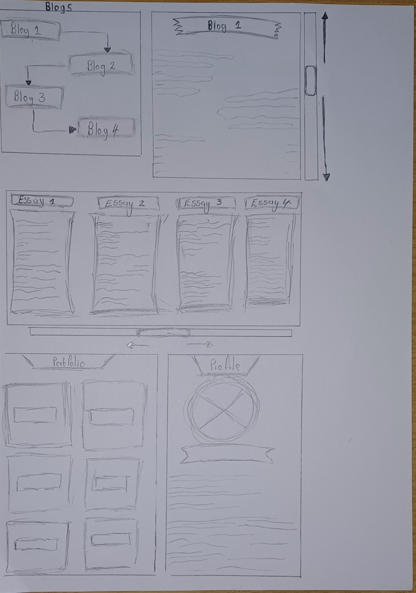

When coming to the readings, I found them quite interesting and informative following how things turned out now in the current age we live in. I found Borges's work to be very interesting when comparing his ideology to the current way of doing things in our society when interacting with information. The fact that he talked about how we are bombarded with information daily on the web to the point where we start to feel burdened by it, Not only that but some of the information is contradictory and ambiguous as well as incomplete. This pretty much sums up the entirety of the internet nowadays not to mention all other forms of media, such as local news, news outlets, and mainstream media. To show readers how this feeling of being overwhelmed looks he depicts a picture of the library of Babel. Which depicts excess amounts of texts, stored in one place for safe keeping and retention of memory which would otherwise be impossible for impossible for humans to remember.
when looking at the history of the web. I was shocked to see the first somewhat prototypes that Pioneers such as Bush and Nelson came up with before the creation of the actual World Wide Web. Especially Ted Nelson who coined both the terms Hypertext and Hypermedia. His work on his project Xanadu, shares common characteristics with most websites on the internet nowadays with the interface he was talking about in his early studies. The way he builds up hypermedia from hypertext is outstanding simply because he took the act of organizing ideas in an interconnected style, mimicking his brain's thinking process, and revolutionized it into creating a worldwide "docuverse", so he called it where all information was interconnected connected contextually by links. Leading to things such as hyperlinks which make tracking information on the web easy.
Further on Vanevar Bush, talks about a memory expansion electromechanical device for interacting with microform docs. Honestly listening to it now, when hearing it now it sounds like the computer before the actual computer, but the difference is that he envisioned it as a device that would allow comprehension and storing of individual texts, serving as a mechanized consultant one that retains and stores information better than humans. My goals for this course at the very end are to be able to take in a piece of information, digest it, analyze it, and as well as evaluate how can it make life better or rather can it be above the current state it is already in. Sort of similar to how Jorge Borges, Bush, and last but not least Nelson did in their times.
Reflecting on American scholar, author of electronic literature, and innovator of hypertext Stuart Moulthrop's work, and how it ties in into nowadays internet and the way of doing things. I would say that Stuart Moulthrop's Hypertext, and laws of media set up the internet the way we know about it in the current modern age. The fact that the American author saw the wave of technological change approaching the world and decided to invest in works that would work in accordance with that change is outstanding. Hypertext and digital/electronic literature fit exactly in today's society as beings are living fast-paced lives, and the majority of us do not make time for simple things such as going to the bookstore and purchasing a book, sitting down, and reading it. Just because convenience is in the palm of our hands in the form of electronic devices. Moul5throp also poses a very strong observation where he states that new forms of media such as electronic books are not there to replace old forms of literature such as books, but rather to combat other forms of media such as television and hence creating a better lasting effect on the consumer in the long term. This work addresses how humans have made hypertexts and electronic books, their new substitute for hardcopy texts in the modern-day.
Now if you head to my images root folder there you shall find the first iteration or rather model of my website's wireframe, which is basically a sketch showing my homepage and how I want my users to interact with my website. Now granted this is a work in progress so many of the aspects of my wireframe may change with due time, research , and practice. But essentially the way I want my website to look is that one shall interact with the URL link which shall take them to my website where the first thing they shall see is a nice image subtled color background. I always think that having a nice background sets the tone and mood for something similar to how one sets their wallpaper. when navigating their eyes to the left that's when their attention will be caught by an animated drawing of me, which serves just as a taste to the user as to what they should look forward to. scrolling down a bit will display the welcome text or introduction to make the user feel like they are immersed in the website. On the right shall be the options bar which when pressed, they can see all of my work in the respective root folders. Scrolling down beyond that is a short description of me as a scholar, my hopes and ambitions as well as a little bit of information about the website.
Now when it comes to the matter of interaction and WWW, I define interaction as having to alter, control, manipulate, or command something and have it show you any form of feedback. The World Wide Web on the other hand is a collection of different websites and texts/ hypertexts all at a URL click away. They are something I have considered most definitely in the crafting stage of my wirefram as to how is my website going to be interactable and how one can access it from WWWW.
Joshua-Jandrell. (n.d.) JJ Website. Available at: https://joshua-jandrell.github.io/JJ_Website/ [Accessed 24 February 2025]. Wits Digital Arts Interactive Media. (n.d.) WSOA3028A 2567169. Available at: https://wits-digital-arts-interactive-media.github.io/WSOA3028A_2567169/ [Accessed 24 February 2025]. Looka. (n.d.) Wireframe examples. Available at: https://looka.com/blog/wireframe-examples/ [Accessed 24 February 2025].
This week was all about critical thinking and planning out the interaction design aspect of my website. To do that first I had to understand a few terminologies under the concept of web design and interaction, defined as the meeting point between an active body and something that can affect in some way, Bardin, R (2023). The definition then led me to the following key points to pay close attention to when designing my website, the responsiveness of the website, semiotic design ( what it communicates and how it does it), and lastly useability. Now a big part of anyone going onto any site is how effectively the site responds to the user's specific needs. Since I'm not efficient in CSS styling yet I gave this part of my design some thought as to when I do start styling alongside the design process.
The conclusion I finally came to was that keeping my layout and User Interface simple yet effective is the best thing. Understanding that a generic approach to doing things is sometimes better than overly complicated ways. Having a simplistic navigation bar or button option rather than a visual effects animation every time before your user has to access a window is a far better design choice. Hence I decided to keep my homepage simple yet functional, with a drawn image of myself, next to it a welcome text, and then on the far top left the option button which will display all the other windows accessible on my website, making the site just responsive enough without feeling a little too overbearing.
Now a lot of why I decided to go with such a simple outline has to do with the second point, which is the semiotic design. One of my favorite sayings is "If it's not broken do not fix it" which ties into my ideology in this case of simplicity being the best choice. I believe that although we live in an innovative time, sometimes the core underlying ways/processes or rather a way of designing things still work best even in our current fast-paced and ever-changing time. Hence why I chose a simple design layout because I want my users to feel comfortable and acquainted with my website, I also have had the experience of being a user on a website that was overly complicated, and esthetically pleasing but could have gone the simple route in terms of semiotic design and intractability.
Lastly, useability, what kind of devices should I bear in mind whilst still designing my website, what users do I have in mind and lastly what kind of experience do I want them to have in the short or long period they interact with my website? All of those are questions that crossed my mind whilst I was brainstorming this point. I decided that just like any good website I want mine to be accessible from all kinds of devices regardless of size no power. Not only that but it must be accessible to everyone open to learning, listening, or who just wants to browse the web for some inspiration if not dopamine. Lastly,y users should feel a sense of curiosity as to how they can create a website, I want my website to inspire, enlighten, and entertain above all else so that more and more people can click on that URL link and get the exposure of a lifetime.
The third-week exercise helped me connect the dots to my question of why URL naming schemes and semantic mark-up are so important and should be something that I push to achieve on my website. This ties into the point I made about wanting my website to convey a feeling of familiarity and comfort and to do that, there has to be order on the website so that users alongside myself as the creator do not clash or get confused and end up hating the website. URL schemes are good practice for that because the more organized and clear one's URL is the better understanding the users will have when they decide to click on a window in the website, not only that but the line of communication from the website to the use then becomes even clear as the user knows how to interact with the website to get the results they want.
This week I focused more on my semantic markup, plus interaction design. For the first time in my web design journey, I had to think through my choices and not just scribble things onto my website because they looked good aesthetically. My design had to communicate to my user(s) how I wanted them to interact with my website. An example of this included the process of navigating in between pages, whether I wanted to make this a button-based action, or rather just have links accessing the coherent page directly. Not only that but the placement of the buttons/ links also matters, as this dictates the flow of my website.
Placement of the options at the top could convey a sense of clarity and have the agency to immediately skip to the following page not necessarily having read the previous page. On the other hand placement of the next/ previous options at the bottom of the page could imply that I want the user to interact with the current page at hand before they even think of skipping it, forcing them in a way to finish the contents of the current page or just scroll endlessly and tirelessly before reaching the options. Since I have not found a way to integrate buttons into my website currently, I decided to stick with the direct links, as this is the most convenient choice right now. When it comes to the placement, I opted for a top-of-the-page placement, I want my users to have that feeling of agency, being in control of their actions and being forced to interact with a page they do not want to interact with.
When I look back at my first Wireframe design, I do admit I overcomplicated things a bit by adding too much visual aesthetics which would otherwise be falling under the stylish aspect of my journey. I am grateful though that I did keep my design simple yet effective as it communicates everything the user may need to know about my website without being overly complicated. Reflecting on my website preparation and design work so far I can say I am proud of the progress I have made, and filled with anticipation for what is to come. I haven't encountered that many adversities but I would say at times visualization of the ideas in my head was difficult and implementing these ideas. What I would like to improve on going forward is making my website unique and different from other generic websites since it shares the core basics with the more generic ones, may it be colors, tones, images, or content inside it, all of that has to reflect me and my personality.